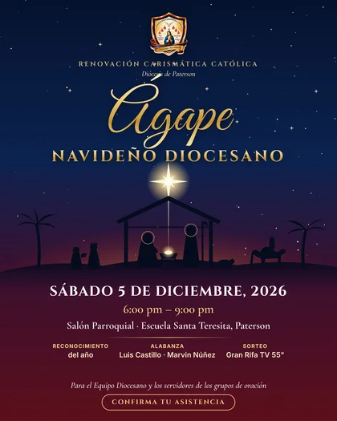

Renovación Carismática Católica
Diócesis de Paterson
Ágape
Navideño Diocesano
Renovación Carismática Católica
Diócesis de Paterson
Navideño Diocesano
Sábado 5 de diciembre, 2026
6:00 pm – 9:00 pm
Salón Parroquial · Escuela Santa Teresita, Paterson
Información preliminar · sujeta a cambiosUna noche en familia
El Ágape Navideño Diocesano es nuestra celebración de Navidad como familia de la Renovación Carismática Católica de la Diócesis de Paterson: una noche para dar gracias a Dios por el año de servicio, compartir la mesa y celebrar juntos el nacimiento de Jesús. Está dedicada al Equipo Diocesano y a los servidores de los grupos de oración.

Toca el flyer para verlo completo
Reconocimiento
del año
Alabanza
Luis Castillo · Marvin Núñez
Sorteo
Gran Rifa TV 55"
Este es un encuentro privado. Para registrarte necesitarás el PIN de 4 dígitos que recibirás junto con tu invitación.
Registro disponible próximamente